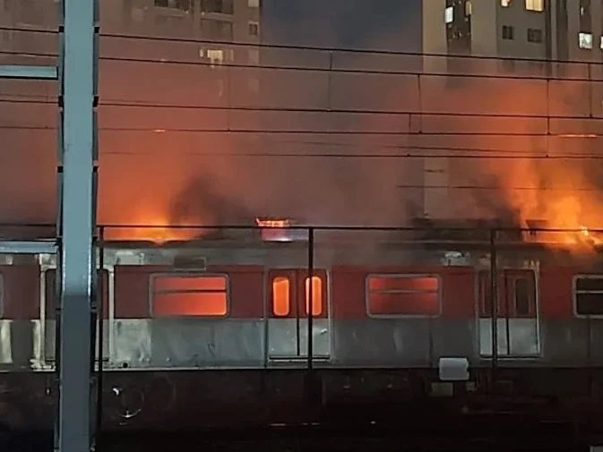

A privatização das linhas da CPTM começará a ser assistida pelos próximos 90 dias

A privatização das linhas da CPTM começará a ser assistida pelos próximos 90 dias
Tarcísio de Freitas, governador de São Paulo, privatizou as linhas 11-Coral, 12-Safira e 13-Jade, passando para a empresa Trivia Trens nesta última terça-feira (21).
Com as transações de comando sendo iniciada em março de 2025, a concessionária passou a ter 100% das operações em julho desse ano. Contudo, o que mais choca o público não foi apenas a ação de privatizar as linhas de trem, e sim, o que houve em um vagão na região do Brás.
Por volta das 05h30 da manhã na última quinta-feira (23), entre as estações Bresser e Tatuapé, acabou pegando fogo, mas que ainda não se sabe o motivo certo.
"A gente não tem como dizer ou afirmar quais são as causas e os fatores que levaram a este incidente, mas o que a gente está fazendo é apurar e entender para que isso não volte a acontecer." Disse o diretor presidente estatal, Michael Sotelo Cerqueira.
Cerqueira também foi questionado sobre possível sabotagem contra a privatização, em resposta, o presidente da CPTM (Companhia Paulista de Trens Metropolitanos), afirma que a empresa colaborou e sempre colabora com todas as concessões.
"Foi assim com a transição da Linha 7-Rubi com a transição das Linhas 11, 12, 13. Os nosssos colaboradores são extremamente profissionais e estiveram a postos com o pedido do governo. Nossa obrigação e compromisso é com a própria população, de entregar o melhor serviço. Se existe qualquer tipo de suspeita sobre a conduta, isso é um caso de polícia a ser verificado." Michael adicionou.
Enquanto isso, a Artesp (Agência de Transporte do Estado de São Paulo) vai investigar, mas determinou que a CPTM voltasse a operar as linhas afetadas pela ocorrência, por 90 dias, em conjunto com a Trivia Trens para assegurar o melhor serviço à população.
Em nota, Trivia destacou que "sempre cumpriu todas as suas obrigações contratuais em todas as fases de transição dos serviços concedidos até a data atual, de forma estruturada, transparente e cooperativa."
Em resposta, Tarcísio ameaça encerrar contrato com a concessionária e diz que precisam se preparar melhor. Mesmo após os 90 dias, se o trabalho não mantiver do agrado do deputado, não irá descarar o fim do contrato com a empresa privada.
Do outro lado, Haddad pune severamente as escolhas do deputado, ele afirma: "Nós temos um problema grave de gestão em São Paulo".
Na sequência, Haddad criticou a privatização da Sabesp e das Linhas de trem; fazndo também referência ao período em que Tarcísio de Freitas trabalhou junto com o ex-presidente, Jair Bolsonaro, afirmando rever contratos da época, prometendo revisar novamente os contratos atuais se for eleito.